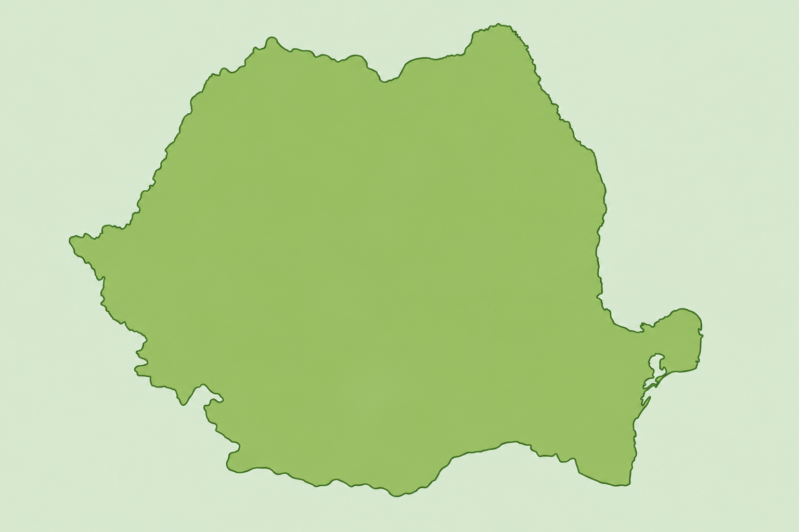

ST
⊗
P
STOP RISIPA
ACASĂ
CARAVANA
"FĂRĂ RISIPĂ"
DESPRE RISIPĂ
SFATURI & REȚETE
IMPLICĂ-TE
CONTACT
DONEAZĂ ACUM
URMĂREȘTE TRASEUL CARAVANEI
HARTĂ INTERACTIVĂ ROMÂNIA

Timișoara
✅ Stop finalizat
Timișoara
📅
Data:
1-5 Mai
🕙
Ora:
10:00–14:00
Stop finalizat cu succes! 320 kg alimente donate.
Arad
✅ Stop finalizat
Arad
📅
Data:
6-10 Mai
🕙
Ora:
10:00–14:00
Stop finalizat! 280 kg alimente donate.
● LIVE
Sibiu
🟢 LIVE ACUM
Sibiu
📅
Data:
15 Mai
🕙
Ora:
10:00–14:00
ACUM AICI! Piața Mare, Sibiu. Vino să donezi!
Cluj-Napoca
🟠 Stop viitor
Cluj-Napoca
📅
Data:
22 Mai
🕙
Ora:
10:00–15:00
Următorul stop! Ne vedem în Cluj-Napoca.
Iași
🟠 Stop viitor
Iași
📅
Data:
29 Mai
🕙
Ora:
10:00–15:00
Stop planificat în Iași. Bucuros să te vedem!
București
🟠 Stop viitor
București
📅
Data:
5 Iunie
🕙
Ora:
09:00–16:00
Stop special în Capitală! Eveniment mare planificat.
Constanța
🟠 Stop viitor
Constanța
📅
Data:
12 Iunie
🕙
Ora:
10:00–15:00
Stop final pe malul mării! Ne vedem în Constanța.
TIMIȘOARA
(Trecut)
ARAD
(Trecut)
SIBIU
(Prezent)
CLUJ
(Viitor)
IAȘI
(Viitor)
BUCUREȘTI
(Viitor)
CONSTANȚA
(Viitor)
REGULAMENT DONARE
ALIMENTE ACCEPTATE
🥕 Legume proaspete
🥫 Conserve nedeschise
🥛 Lactate în termen
🍞 Produse de panificație
🍎 Fructe proaspete
NEACCEPTATE
❌ Alimente expirate
❌ Conserve deschise
❌ Produse deteriorate
❌ Băuturi alcoolice